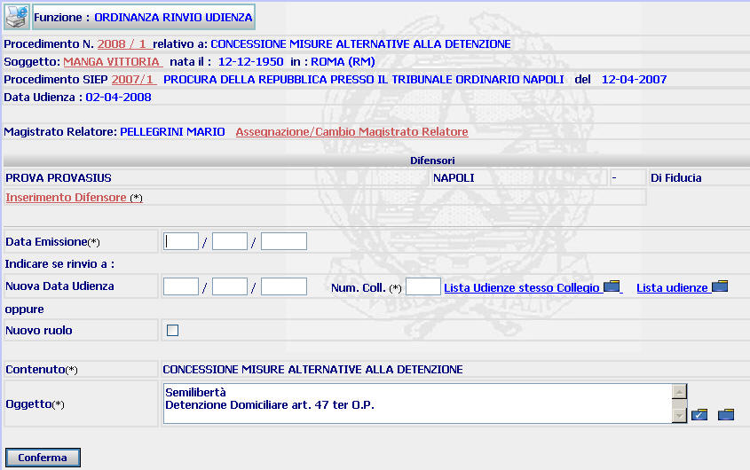
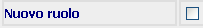
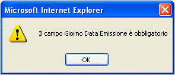

ORDINANZA RINVIO UDIENZA: La funzione consente di registrare il rinvio di una udienza effettuato a seguito di ordinanza, indicando la data della nuova udienza ovvero l'avvenuto rinvio a nuovo ruolo.
LE MASCHERE VIDEO
La funzione in esame viene realizzata attraverso la maschera seguente che è composta da campi obbligatori, opzionali e da più sezioni:
intestazione che contiene dati relativi a estremi del procedimento Sius, il nome e cognome del soggetto, gli estremi del procedimento SIEP;
magistrato relatore: la sezione consente l'assegnazione/cambio magistrato;
difensori: la funzione consente l'inserimento difensore;
dati rinvio udienza

N.B.: I campi da compilare obbligatoriamente sono quelli contrassegnati con un asterisco.
COME FARE PER ...
| Per visualizzare il dettaglio del procedimento Sius l'utente deve cliccare sul link relativo all'Anno/Numero del procedimento Sius evidenziato in rosso; |

| Per visualizzare il dettaglio del soggetto l'utente deve cliccare sul link relativo al cognome/nome del soggetto evidenziato in rosso; |

| Per visualizzare il dettaglio del procedimento Siep l'utente deve cliccare sul link relativo all' Anno/Numero del procedimento Siep evidenziato in rosso; |

| Per assegnare o cambiare il magistrato relatore l'utente deve selezionare il link assegnazione/cambio magistrato |
| Per inserire il difensore l'utente deve selezionare il link inserimento difensore |
| Per inserire i dati del rinvio, l'utente deve: |
inserire la data di emissione dell'ordinanza;
nel caso di rinvio a udienza fissa, selezionare l'udienza di rinvio utilizzando una delle due liste predefinite che consentono di visualizzare, rispettivamente, il calendario delle udienze dello stesso Collegio e quello generale di tutte le udienze inserite
nel caso di rinvio a nuovo ruolo, selezionare il check button

verificare che l'oggetto (o gli oggetti) sia esatto, effettuando le eventuali modifiche attraverso i pulsanti
e
.
confermare i dati inseriti cliccando sul pulsante
CAMPI
I campi da compilare nella presente maschera sono i seguenti:
| NOME | DESCRIZIONE |
| Data emissione | Campo (obbligatorio) nel quale deve essere inserita la data di emissione dell'ordinanza |
| Nuova data udienza |
Campo (obbligatorio) nel quale va
inserita la data dell'udienza di rinvio, utilizzando i link
|
| Oggetto |
Campo (obbligatorio) attraverso il
quale è possibile
modificare gli oggetti o inserirne di nuovi, selezionando i pulsanti
|
PULSANTI
Oltre al pulsante
 di stampa del contesto (videata)
di stampa del contesto (videata)
|
PULSANTE |
DESCRIZIONE |
|
|
A fronte di tale comando, il sistema visualizza la lista predefinita di tutti gli oggetti |
|
|
A fronte di tale comando, il sistema visualizza la lista predefinita degli oggetti legati al contenuto selezionato |
BOTTONI
Oltre ai comandi funzionali relativi al menù verticale sono presenti i seguenti comandi:
|
COMANDI |
DESCRIZIONE |
|
|
A fronte di tale comando, il sistema, dopo aver verificato la validità dei dati specificati, visualizza la maschera di dettaglio ordinanza rinvio udienza. |
CONTROLLI
Il sistema effettua i seguenti controlli:
| verifica che sia stato assegnato il difensore, fornendo in caso contrario il seguente messaggio |

|
verifica che risulti inserita la data di emissione, fornendo in caso contrario il seguente messaggio |

|
verifica che sia stato inserita la data dell'udienza di rinvio (ovvero che sia stato selezionato il check button , fornendo in caso contrario il seguente messaggio |